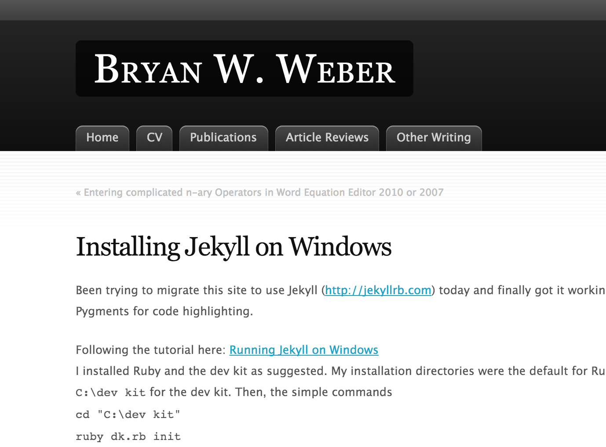

{{ post.title }}
Posted on {{ post.date | date: "%B %d, %Y" }} by [author name]
{{ post.content }}
A tool that has a huge impact on how I work
By Johan Ronsse / @wolfr_
“Transform your plain text into static websites and blogs.”
HTML prototypes of applications
My new company website
The Clank website
Small websites for clients
CMS-heavy & database driven sites
Installing Jekyll is "straightforward"
~ $ gem install jekyll

For the gem command to work you need to the RubyGems site and follow the instructions.
~ $ gem update --system
~ $ # you might have to use sudo
For Ruby to work nicely on your system it might make sense to install rvm so you can have a more recent version of ruby than 1.8.7 that ships with Mac OS
You might want to install the Xcode developer tools (you can get Xcode from the Mac app store)
People tell me it's better to use brew than force install everything with sudo
~ $ cd ~/Sites/
~ $ jekyll new my-awesome-site
~ $ cd my-awesome-site
The serve command auto updates the generated site when you make changes.
~ $ jekyll serve -w
# => Now browse to http://localhost:4000
_site/: this is the folder for your generated site_layouts/: this is the folder containing your layouts_includes/: this is the folder for partials (think HTML includes)_config.yml: this is the config fileindex.html: base pagecss/: CSS folderThe first concept you need to understand is layouts (demo)
A layout is basically a template in which you can inject content.
---
layout: my-sample-layout
---
This is the content.
{% include head.html %}
{% include header.html %}
{{ content }}
{% include footer.html %}
An include refers to a file in the _includes folder:
{% include head.html %}
head.html might for instance contain the <head> section of a site.
Every content page can be prepended with YAML front matter. Within the YAML front matter you can add some metadata to a page.
---
layout: my-sample-layout
my-custom-statement: my-value
---
This is the content.
These values can be used in the content:
---
layout: my-sample-layout
my-custom-statement: my-value
---
This is the content.
{{ page.my-custom-statement }}
Or, more interestingly, in an "if" clause:
---
layout: my-sample-layout
my-custom-statement: my-value
---
This is the content.
{% if page.my-custom-statement == "my-value" %}
Render this part of the HTML
{% endif %}
For example, show all the states of a form: erorr, success, normal
---
layout: my-sample-layout
error: true
---
This is the content.
{% if page.error }
Render this part of the HTML
{% endif %}
{% if page.success }
Render this part of the HTML
{% endif %}
Task: show all the states of a form: erorr, success, normal
(demo)
The for tag creates a for loop. The cycle tag allows you to cycle through a known data set.
---
layout: my-sample-layout
---
{% for num in (1...3) %}
{% cycle 'a', 'b', 'c' %}
{% endfor %}
Why is this useful? Anything with a lot of iteration. For example, using real data in prototype:
Jekyll contains a pre-built blogging mechanism.
The _posts folder contains markdown files:
2013-08-29-welcome-to-jekyll.markdown
The posts are:
To add an atom feed to your site just add an atom.xml file with the correct values.
There are sample sites on Github. A lot of people made their Jekyll sites open source so other people can learn.
Cactus is a responsive Jekyll theme that contains a blog.
This is for creating nice footnotes like on daringfireball.net and marco.org:
First, specify your markdown engine in your config file:
markdown: kramdown
The _config.yml contains a global "settings" object that specifies things about your site
Next, juse use markdown like this in a blog post:
This is a text with a
footnote[^1].
[^1]: And here is the definition.
You could even make tables if you want to:
Regular blog code: you would use site.posts
{% for post in site.posts %}
{{ post.title }}
Posted on {{ post.date | date: "%B %d, %Y" }} by [author name]
{{ post.content }}
{% endfor %}
If you need pagination blog code: you would use paginator.posts
{% for post in paginator.posts %}
{{ post.title }}
Posted on {{ post.date | date: "%B %d, %Y" }} by [author name]
{{ post.content }}
{% endfor %}
Also, add some pagination code liike this:
Set this in the _config.yml and adjust if necessary:
paginate: 7
paginate_path: "blog/page:num"
Make a folder structure yourself:
portfolio.html
becomes portfolio/index.html
Alternative: use permalinks in YAML front matter, see Jekyll site
baseurl: my-test-site
For each file reference instead of:
<link rel="stylesheet" href="css/screen.css" type="text/css" media="screen">
Use {{ baseurl }} instead:
<link rel="stylesheet" href="{% unless site.baseurl == "/" %}{{ site.baseurl }}{% endunless %}/css/screen.css" type="text/css" media="screen">
Looking for a cleaner solution!
My experience so far
Is a Ruby (.rb) file in the _plugins folder)
module Jekyll
class Random < Liquid::Tag
def initialize(tag_name, arr, tokens)
super
@arr = arr.split(",")
end
def render(context)
@arr[rand(@arr.size)]
end
end
end
Liquid::Template.register_tag('cyclerand', Jekyll::Random)
Just a sitemap.xml file that lists posts and pages (see this link)
<?xml version="1.0" encoding="UTF-8"?>
<urlset xmlns:xsi="http://www.w3.org/2001/XMLSchema-instance" xsi:schemaLocation="http://www.sitemaps.org/schemas/sitemap/0.9 http://www.sitemaps.org/schemas/sitemap/0.9/sitemap.xsd" xmlns="http://www.sitemaps.org/schemas/sitemap/0.9">
{% for post in site.posts %}
<url>
<loc>{{ site.baseurl }}{{ post.url }}</loc>
{% if post.lastmod == null %}
<lastmod>{{ post.date | date_to_xmlschema }}</lastmod>
{% else %}
[...]
{% capture header %}
{% if page.title %}
{% else %}
{% endif %}
{% if site.title %}
{% endif %}
{% if page.url %}
{% endif %}
{% if page.date %}
{% endif %}
{% if site.owner_link %}
{% endif %}
{% endcapture %}{{ header | strip_newlines }}
Get avatars and extra meta data in search results and social media posts
SEO benefit? Dunno, but it doesn't take long to add.
By Johan Ronsse / @wolfr_